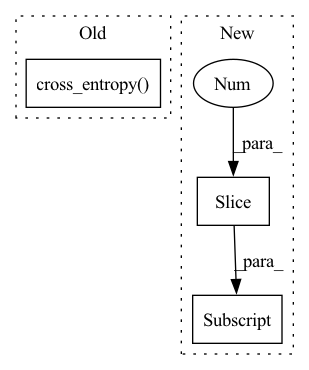

Pattern ID :35129
Before Change
def validation_step(self, val_batch, batch_idx):
x, y = val_batch["x"], val_batch["y"]
preds = self(x)
loss = F.cross_entropy( preds, y)
// loss.requires_grad = True
acc = accuracy(preds, y)
self.log("val_acc_step", acc)
self.log("val_loss", loss)After Change
return loss
def validation_step(self, batch, batch_idx):
x, y = batch[:, 0:self.
n_steps_past, :, :, :] , batch[:, self.
n_steps_past:, :, :, :],
x = x.permute(0, 1, 4, 2, 3)
y = y.squeeze()In pattern: SUPERPATTERN
Frequency: 3
Non-data size: 3
Instances Fragment ID: 100183552
Project Name: subhadityamukherjee/pytorchtutorialrepo
Commit Name: b6d74a2a1f63dc457b6722982e312f7bffff1195
Time: 2021-02-14
Author: msubhaditya@gmail.com
File Name: applications/videoPrediction/WIPvideoPred.py
M Class Name: LitModel
N Class Name: LitModel
M Method Name: validation_step(3)
N Method Name: validation_step(3)
M Parent Class: pl.LightningModule
N Parent Class: pl.LightningModule
M File Name: applications/videoPrediction/WIPvideoPred.py
N File Name: applications/videoPrediction/WIPvideoPred.py
M Start Line: 231
M End Line: 236
N Start Line: 313
N End Line: 321
Before Change
def training_step(self, train_batch, batch_idx):
x, y = train_batch["x"], train_batch["y"]
preds = self(x)
loss = F.cross_entropy( preds, y)
// loss.requires_grad = True
acc = accuracy(preds, y)
self.log("train_acc_step", acc)
self.log("train_loss", loss)After Change
// @tsp.snoop()
def training_step(self, batch, batch_idx):
x, y = batch[:, 0:self.
n_steps_past, :, :, :] , batch[:, self.
n_steps_past:, :, :, :],
x = x.permute(0, 1, 4, 2, 3)
y = y.squeeze() Fragment ID: 100183553
Project Name: subhadityamukherjee/pytorchtutorialrepo
Commit Name: b6d74a2a1f63dc457b6722982e312f7bffff1195
Time: 2021-02-14
Author: msubhaditya@gmail.com
File Name: applications/videoPrediction/WIPvideoPred.py
M Class Name: LitModel
N Class Name: LitModel
M Method Name: training_step(3)
N Method Name: training_step(3)
M Parent Class: pl.LightningModule
N Parent Class: pl.LightningModule
M File Name: applications/videoPrediction/WIPvideoPred.py
N File Name: applications/videoPrediction/WIPvideoPred.py
M Start Line: 221
M End Line: 227
N Start Line: 290
N End Line: 309
Before Change
target_classes_o = torch.cat([t["labels"] for t in targets])
src_logits_matched = src_logits[src_idx]
loss_ce = F.cross_entropy( src_logits_matched, target_classes_o) // TODO: operates on logits?
// Peak loss
loss_peak = torch.tensor(0.).to(device="cuda")After Change
src_idx = self._get_src_permutation_idx(indices)
target_classes = torch.full(src_logits.shape[:2] , 0, dtype=torch.int64, device=src_logits.device)
target_classes[src_idx] = 1
loss_ce = F.cross_entropy(src_logits.transpose(1, 2), target_classes, weight=self.cls_weights.cuda(), label_smoothing=0.0) Fragment ID: 100183554
Project Name: bwittmann/transoar
Commit Name: 6d0ab8401e1a46fba05f2b17942949478bca68ec
Time: 2022-02-10
Author: bastian.wittmann@tum.de
File Name: transoar/models/criterion.py
M Class Name: TransoarCriterion
N Class Name: TransoarCriterion
M Method Name: loss_class(3)
N Method Name: loss_class(4)
M Parent Class: nn.Module
N Parent Class: nn.Module
M File Name: transoar/models/criterion.py
N File Name: transoar/models/criterion.py
M Start Line: 33
M End Line: 61
N Start Line: 40
N End Line: 49